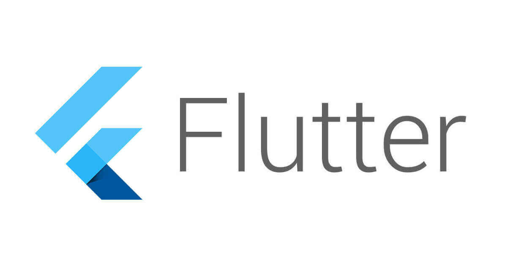
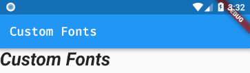

<!DOCTYPE html><html><head><meta charset="utf-8"><title>Flutter 自訂字型 | Titangene Blog</title><meta http-equiv="X-UA-Compatible" content="IE=edge"><meta name="viewport" content="width=device-width,initial-scale=1,maximum-scale=1"><meta name="HandheldFriendly" content="True"><meta name="apple-mobile-web-app-capable" content="yes"><meta name="author" content="Titangene"><link rel="shortcut icon" href="/favicon.ico"><link rel="alternate" href="/atom.xml" title="Titangene Blog"><meta name="description" content="雖然 Android 和 iOS 內建都有字型，但常有自訂字型的需求，所以這篇會教你如何在 Flutter 使用自訂字型。"><meta property="og:type" content="article"><meta property="og:title" content="Flutter 自訂字型"><meta property="og:url" content="https://titangene.github.io/article/flutter-custom-fonts.html"><meta property="og:site_name" content="Titangene Blog"><meta property="og:description" content="雖然 Android 和 iOS 內建都有字型，但常有自訂字型的需求，所以這篇會教你如何在 Flutter 使用自訂字型。"><meta property="og:locale" content="zh_TW"><meta property="og:image" content="https://titangene.github.io/images/cover/flutter.jpg"><meta property="article:published_time" content="2018-10-29T03:40:00.000Z"><meta property="article:modified_time" content="2019-04-30T15:57:38.523Z"><meta property="article:author" content="Titangene"><meta property="article:tag" content="Dart"><meta property="article:tag" content="Font"><meta name="twitter:card" content="summary_large_image"><meta name="twitter:image" content="https://titangene.github.io/images/cover/flutter.jpg"><meta name="twitter:creator" content="@titangeneTW"><meta name="twitter:site" content="@titangene_blog"><meta property="fb:admins" content="100001106016019"><meta property="fb:app_id" content="2470546159839111"><meta property="og:image:width" content="1200"><meta property="og:image:height" content="630"><meta name="google-site-verification" content="AaJ39L7h-nWwJjXJMhAMtXSF6H6BUgGWXC80kYvLic8"><link rel="stylesheet" href="//fonts.googleapis.com/css?family=Inconsolata|Titillium+Web"><link href="https://fonts.googleapis.com/css?family=Source+Code+Pro&display=swap" rel="stylesheet"><link rel="stylesheet" href="//use.fontawesome.com/releases/v5.7.0/css/all.css" integrity="sha384-lZN37f5QGtY3VHgisS14W3ExzMWZxybE1SJSEsQp9S+oqd12jhcu+A56Ebc1zFSJ" crossorigin="anonymous"><link rel="stylesheet" href="https://unpkg.com/gitalk/dist/gitalk.css"><link rel="stylesheet" href="/style.css"><script async src="https://www.googletagmanager.com/gtag/js?id=UA-129758206-1"></script><script>!function(a){function n(){dataLayer.push(arguments)}a.dataLayer=a.dataLayer||[],n("js",new Date),n("config","UA-129758206-1")}(window)</script><script>function setLoadingBarProgress(e){document.getElementById("loading-bar").style.width=e+"%"}</script><meta name="generator" content="Hexo 4.2.0"><link rel="alternate" href="/atom.xml" title="Titangene Blog" type="application/atom+xml"></head></html><body><div id="loading-bar-wrapper"><div id="loading-bar"></div></div><script>setLoadingBarProgress(20)</script><header class="l_header"><div class="wrapper"><div class="nav-main container container--flex"><a class="logo flat-box" href="/">Titangene Blog</a><div class="menu"><ul class="h-list"><li><a class="flat-box nav-home" href="/">Home</a></li><li><a class="flat-box nav-archives" href="/archives">Archives</a></li></ul><div class="underline"></div></div><div class="m_search"><form name="searchform" class="form u-search-form"><input type="text" class="input u-search-input" placeholder="Search"> <i class="fas fa-search"></i></form></div><ul class="switcher h-list"><li class="s-search"><a class="fas fa-search" href="javascript:void(0)"></a></li><li class="s-menu"><a class="fas fa-bars" href="javascript:void(0)"></a></li></ul></div><div class="nav-sub container container--flex"><a class="logo flat-box" href="/">Titangene Blog</a><ul class="switcher h-list"><li class="s-comment"><a class="far fa-comment-alt" href="javascript:void(0)"></a></li><li class="s-top"><a class="fas fa-arrow-up" href="javascript:void(0)"></a></li><li class="s-toc"><a class="fas fa-list-ol" href="javascript:void(0)"></a></li></ul></div></div></header><aside class="menu-phone"><nav><a href="/" class="nav-home nav">Home </a><a href="/archives" class="nav-archives nav">Archives</a></nav></aside><script>setLoadingBarProgress(40)</script><div class="l_body"><div class="container clearfix"><div class="l_main"><article id="post-flutter-custom-fonts" class="post white-box article-type-post" itemscope itemprop="blogPost"><section class="meta"><h2 class="title"><a href="/article/flutter-custom-fonts.html">Flutter 自訂字型</a></h2><span class="post-time"><span class="post-meta-item-icon"><i class="fa fa-calendar"></i> </span><span class="post-meta-item-text">發表於</span> <time title="建立時間：2018-10-29 11:40:00" itemprop="dateCreated datePublished" datetime="2018-10-29T11:40:00+08:00">2018-10-29 </time><span class="post-meta-divider">|</span> <span class="post-meta-item-icon"><i class="fa fa-calendar-check"></i> </span><span class="post-meta-item-text">更新於</span> <time title="修改時間：2019-04-30 23:57:38" itemprop="dateModified" datetime="2019-04-30T23:57:38+08:00">2019-04-30</time></span> <span class="comments-count"><span class="post-meta-divider">|</span> <span class="post-meta-item-icon"><i class="fas fa-comment"></i> </span><a href="https://titangene.github.io/article/flutter-custom-fonts.html#disqus_thread" class="article-comment-count" data-disqus-identifier="article/flutter-custom-fonts.html" itemprop="discussionUrl"></a></span><div class="post-category"><span class="post-meta-item-icon"><i class="fa fa-folder"></i> </span><span class="post-meta-item-text">分類於</span> <span itemprop="about" itemscope itemtype="http://schema.org/Thing"><a href="/categories/flutter/" itemprop="url" rel="index"><span itemprop="name">Flutter</span></a>, <a href="/categories/flutter/mobile-app/" itemprop="url" rel="index"><span itemprop="name">Mobile App</span></a></span></div></section><section class="toc-wrapper"><h3>目錄</h3><ol class="toc"><li class="toc-item toc-level-2"><a class="toc-link" href="#將字型檔放入專案資料夾內"><span class="toc-text">將字型檔放入專案資料夾內</span></a></li><li class="toc-item toc-level-2"><a class="toc-link" href="#在-pubspec-yaml-定義字型資訊"><span class="toc-text">在 pubspec.yaml 定義字型資訊</span></a></li><li class="toc-item toc-level-2"><a class="toc-link" href="#設定預設字型"><span class="toc-text">設定預設字型</span></a></li><li class="toc-item toc-level-2"><a class="toc-link" href="#在特定-Widget-設定字型"><span class="toc-text">在特定 Widget 設定字型</span></a></li><li class="toc-item toc-level-2"><a class="toc-link" href="#完整範例程式碼"><span class="toc-text">完整範例程式碼</span></a></li></ol></section><section class="article typo"><div class="article-entry" itemprop="articleBody"><p></p><p>雖然 Android 和 iOS 內建都有字型，但常有自訂字型的需求，所以這篇會教你如何在 Flutter 使用自訂字型。</p><a id="more"></a><h2 id="將字型檔放入專案資料夾內"><a class="header-anchor" href="#將字型檔放入專案資料夾內"></a>將字型檔放入專案資料夾內</h2><p>此範例是放在 <code>./assets/fonts</code> 資料夾內：</p><figure class="highlight plain"><table><tr><td class="gutter"><pre><span class="line">1</span><br><span class="line">2</span><br><span class="line">3</span><br><span class="line">4</span><br><span class="line">5</span><br><span class="line">6</span><br><span class="line">7</span><br></pre></td><td class="code"><pre><code class="hljs plain">assets&#x2F;<br>  fonts&#x2F;<br>    FiraCode-Medium.ttf<br>    mononoki-Bold.ttf<br>    mononoki-BoldItalic.ttf<br>    mononoki-Italic.ttf<br>    mononoki-Regular.ttf<br></code></pre></td></tr></table></figure><h2 id="在-pubspec-yaml-定義字型資訊"><a class="header-anchor" href="#在-pubspec-yaml-定義字型資訊"></a>在 <code>pubspec.yaml</code> 定義字型資訊</h2><figure class="highlight yaml"><table><tr><td class="gutter"><pre><span class="line">1</span><br><span class="line">2</span><br><span class="line">3</span><br><span class="line">4</span><br><span class="line">5</span><br><span class="line">6</span><br><span class="line">7</span><br><span class="line">8</span><br><span class="line">9</span><br><span class="line">10</span><br><span class="line">11</span><br><span class="line">12</span><br><span class="line">13</span><br><span class="line">14</span><br><span class="line">15</span><br></pre></td><td class="code"><pre><code class="hljs yaml"><span class="hljs-attr">flutter:</span><br>  <span class="hljs-attr">fonts:</span><br>    <span class="hljs-bullet">-</span> <span class="hljs-attr">family:</span> <span class="hljs-string">FiraCode</span><br>      <span class="hljs-attr">fonts:</span><br>        <span class="hljs-bullet">-</span> <span class="hljs-attr">asset:</span> <span class="hljs-string">assets/fonts/FiraCode-Medium.ttf</span><br>    <span class="hljs-bullet">-</span> <span class="hljs-attr">family:</span> <span class="hljs-string">Mononoki</span><br>      <span class="hljs-attr">fonts:</span><br>        <span class="hljs-bullet">-</span> <span class="hljs-attr">asset:</span> <span class="hljs-string">assets/fonts/mononoki-Regular.ttf</span><br>        <span class="hljs-bullet">-</span> <span class="hljs-attr">asset:</span> <span class="hljs-string">assets/fonts/mononoki-Bold.ttf</span><br>          <span class="hljs-attr">weight:</span> <span class="hljs-number">700</span><br>        <span class="hljs-bullet">-</span> <span class="hljs-attr">asset:</span> <span class="hljs-string">assets/fonts/mononoki-Italic.ttf</span><br>          <span class="hljs-attr">style:</span> <span class="hljs-string">italic</span><br>        <span class="hljs-bullet">-</span> <span class="hljs-attr">asset:</span> <span class="hljs-string">assets/fonts/mononoki-BoldItalic.ttf</span><br>          <span class="hljs-attr">weight:</span> <span class="hljs-number">700</span><br>          <span class="hljs-attr">style:</span> <span class="hljs-string">italic</span><br></code></pre></td></tr></table></figure><h2 id="設定預設字型"><a class="header-anchor" href="#設定預設字型"></a>設定預設字型</h2><p></p><figure class="highlight dart"><table><tr><td class="gutter"><pre><span class="line">1</span><br><span class="line">2</span><br><span class="line">3</span><br><span class="line">4</span><br><span class="line">5</span><br></pre></td><td class="code"><pre><code class="hljs dart">MaterialApp(<br>  title: <span class="hljs-string">'Custom Fonts'</span>,<br>  theme: ThemeData(fontFamily: <span class="hljs-string">'FiraCode'</span>),<br>  home: MyHomePage(title: <span class="hljs-string">'Custom Fonts'</span>),<br>);<br></code></pre></td></tr></table></figure><h2 id="在特定-Widget-設定字型"><a class="header-anchor" href="#在特定-Widget-設定字型"></a>在特定 Widget 設定字型</h2><p></p><figure class="highlight dart"><table><tr><td class="gutter"><pre><span class="line">1</span><br><span class="line">2</span><br><span class="line">3</span><br><span class="line">4</span><br><span class="line">5</span><br><span class="line">6</span><br><span class="line">7</span><br><span class="line">8</span><br><span class="line">9</span><br></pre></td><td class="code"><pre><code class="hljs dart">Text(<br>  <span class="hljs-string">'Custom Fonts'</span>,<br>  style: TextStyle(<br>    fontFamily: <span class="hljs-string">'Mononoki'</span>,<br>    fontSize: <span class="hljs-number">30.0</span>,<br>    fontWeight: FontWeight.w700,<br>    fontStyle: FontStyle.italic,<br>  ),<br>)<br></code></pre></td></tr></table></figure><h2 id="完整範例程式碼"><a class="header-anchor" href="#完整範例程式碼"></a>完整範例程式碼</h2><p></p><figure class="highlight dart"><table><tr><td class="gutter"><pre><span class="line">1</span><br><span class="line">2</span><br><span class="line">3</span><br><span class="line">4</span><br><span class="line">5</span><br><span class="line">6</span><br><span class="line">7</span><br><span class="line">8</span><br><span class="line">9</span><br><span class="line">10</span><br><span class="line">11</span><br><span class="line">12</span><br><span class="line">13</span><br><span class="line">14</span><br><span class="line">15</span><br><span class="line">16</span><br><span class="line">17</span><br><span class="line">18</span><br><span class="line">19</span><br><span class="line">20</span><br><span class="line">21</span><br><span class="line">22</span><br><span class="line">23</span><br><span class="line">24</span><br><span class="line">25</span><br><span class="line">26</span><br><span class="line">27</span><br><span class="line">28</span><br><span class="line">29</span><br><span class="line">30</span><br><span class="line">31</span><br><span class="line">32</span><br><span class="line">33</span><br><span class="line">34</span><br><span class="line">35</span><br><span class="line">36</span><br><span class="line">37</span><br><span class="line">38</span><br><span class="line">39</span><br><span class="line">40</span><br><span class="line">41</span><br><span class="line">42</span><br><span class="line">43</span><br><span class="line">44</span><br><span class="line">45</span><br><span class="line">46</span><br><span class="line">47</span><br><span class="line">48</span><br><span class="line">49</span><br><span class="line">50</span><br><span class="line">51</span><br><span class="line">52</span><br><span class="line">53</span><br><span class="line">54</span><br><span class="line">55</span><br><span class="line">56</span><br><span class="line">57</span><br><span class="line">58</span><br><span class="line">59</span><br><span class="line">60</span><br><span class="line">61</span><br><span class="line">62</span><br><span class="line">63</span><br><span class="line">64</span><br><span class="line">65</span><br><span class="line">66</span><br><span class="line">67</span><br><span class="line">68</span><br><span class="line">69</span><br><span class="line">70</span><br><span class="line">71</span><br><span class="line">72</span><br></pre></td><td class="code"><pre><code class="hljs dart"><span class="hljs-keyword">import</span> <span class="hljs-string">'package:flutter/material.dart'</span>;<br><br><span class="hljs-keyword">void</span> main() =&gt; runApp(<span class="hljs-keyword">new</span> MyApp());<br><br><span class="hljs-class"><span class="hljs-keyword">class</span> <span class="hljs-title">MyApp</span> <span class="hljs-keyword">extends</span> <span class="hljs-title">StatelessWidget</span> </span>&#123;<br>  <span class="hljs-meta">@override</span><br>  Widget build(BuildContext context) &#123;<br>    <span class="hljs-keyword">return</span> <span class="hljs-keyword">new</span> MaterialApp(<br>      title: <span class="hljs-string">'Custom Fonts'</span>,<br>      theme: <span class="hljs-keyword">new</span> ThemeData(<br>        primarySwatch: Colors.blue,<br>        fontFamily: <span class="hljs-string">'FiraCode'</span>,<br>      ),<br>      home: <span class="hljs-keyword">new</span> MyHomePage(title: <span class="hljs-string">'Custom Fonts'</span>),<br>    );<br>  &#125;<br>&#125;<br><br><span class="hljs-class"><span class="hljs-keyword">class</span> <span class="hljs-title">MyHomePage</span> <span class="hljs-keyword">extends</span> <span class="hljs-title">StatelessWidget</span> </span>&#123;<br>  MyHomePage(&#123;Key key, <span class="hljs-keyword">this</span>.title&#125;) : <span class="hljs-keyword">super</span>(key: key);<br><br>  <span class="hljs-keyword">final</span> <span class="hljs-built_in">String</span> title;<br><br>  <span class="hljs-meta">@override</span><br>  Widget build(BuildContext context) &#123;<br>    <span class="hljs-keyword">return</span> <span class="hljs-keyword">new</span> Scaffold(<br>      appBar: <span class="hljs-keyword">new</span> AppBar(<br>        title: <span class="hljs-keyword">new</span> Text(<span class="hljs-keyword">this</span>.title),<br>      ),<br>      body: Column(<br>        children: &lt;Widget&gt;[<br>          <span class="hljs-keyword">new</span> Text(<br>            <span class="hljs-string">'&lt;-- Custom Fonts -&gt;&gt;'</span>,<br>            style: TextStyle(fontSize: <span class="hljs-number">30.0</span>),<br>          ),<br>          <span class="hljs-keyword">new</span> Text(<br>            <span class="hljs-string">'Custom Fonts'</span>,<br>            style: TextStyle(<br>              fontFamily: <span class="hljs-string">'Mononoki'</span>,<br>              fontSize: <span class="hljs-number">30.0</span>,<br>            ),<br>          ),<br>          <span class="hljs-keyword">new</span> Text(<br>            <span class="hljs-string">'Custom Fonts'</span>,<br>            style: TextStyle(<br>              fontFamily: <span class="hljs-string">'Mononoki'</span>,<br>              fontSize: <span class="hljs-number">30.0</span>,<br>              fontWeight: FontWeight.w700,<br>            ),<br>          ),<br>          <span class="hljs-keyword">new</span> Text(<br>            <span class="hljs-string">'Custom Fonts'</span>,<br>            style: TextStyle(<br>              fontFamily: <span class="hljs-string">'Mononoki'</span>,<br>              fontSize: <span class="hljs-number">30.0</span>,<br>              fontStyle: FontStyle.italic,<br>            ),<br>          ),<br>          <span class="hljs-keyword">new</span> Text(<br>            <span class="hljs-string">'Custom Fonts'</span>,<br>            style: TextStyle(<br>              fontFamily: <span class="hljs-string">'Mononoki'</span>,<br>              fontSize: <span class="hljs-number">30.0</span>,<br>              fontWeight: FontWeight.w700,<br>              fontStyle: FontStyle.italic,<br>            ),<br>          ),<br>        ],<br>      ),<br>    );<br>  &#125;<br>&#125;<br></code></pre></td></tr></table></figure><blockquote><p>詳情可參考 <a href="https://flutter.io/cookbook/design/fonts/" target="_blank" rel="noopener">Using custom fonts - Flutter</a> 官方文件</p></blockquote></div><div class="article-tags tags"><a href="/tags/dart/" title="Dart">Dart</a> <a href="/tags/font/" title="Font">Font</a></div></section><div class="article-share-links"><span>分享：</span> <a class="fab fa-facebook-f" title="Facebook" target="_blank" href="javascript:window.open('https://www.facebook.com/sharer.php?u=https%3A%2F%2Ftitangene.github.io%2Farticle%2Fflutter-custom-fonts.html', 'Share on Facebook','width=600, height=600')"></a> <a class="fab fa-twitter" title="Twitter" target="_blank" href="javascript:window.open('https://twitter.com/share?url=https%3A%2F%2Ftitangene.github.io%2Farticle%2Fflutter-custom-fonts.html&amp;text=Flutter 自訂字型&amp;hashtags=Dart,Font&amp;via=titangene_blog', 'Share on Twitter','width=600, height=260')"></a> <a class="fab fa-linkedin-in" title="Linkedin" target="_blank" href="javascript:window.open('https://www.linkedin.com/shareArticle?mini=true&amp;url=https%3A%2F%2Ftitangene.github.io%2Farticle%2Fflutter-custom-fonts.html&amp;title=Flutter 自訂字型', 'Share on Linkedin','width=600, height=600')"></a> <a class="fab fa-facebook-messenger" title="Facebook Messenger" target="_blank" href="javascript:window.open('http://www.facebook.com/dialog/send?app_id=2470546159839111&amp;link=https%3A%2F%2Ftitangene.github.io%2Farticle%2Fflutter-custom-fonts.html&amp;display=popup&amp;redirect_uri=https%3A%2F%2Fwww.facebook.com%2Fdialog%2Freturn%2Fclose%23_%3D_', 'Send in Messenger','width=600, height=600')"></a> <a class="fab fa-telegram-plane" href="https://telegram.me/share/url?url=https%3A%2F%2Ftitangene.github.io%2Farticle%2Fflutter-custom-fonts.html&text=Flutter 自訂字型" target="_blank"></a></div><nav id="article-nav"><a href="/article/flutter-install-on-windows.html" id="article-nav-prev" class="article-nav-link-wrap" title="Flutter 環境建置 (Windows)" rel="prev"><strong class="article-nav-caption">Prev</strong><p class="article-nav-title">Flutter 環境建置 (Windows)</p><i class="fas fa-angle-left"></i> </a><a href="/article/github-url-shortener.html" id="article-nav-next" class="article-nav-link-wrap" title="GitHub 縮網址服務 Git.io" rel="next"><strong class="article-nav-caption">Next</strong><p class="article-nav-title">GitHub 縮網址服務 Git.io</p><i class="fas fa-angle-right"></i></a></nav><section id="list_related_posts"><h2>相關文章</h2><ul class="related-posts"><li class="related-posts-item"><a class="related-posts-link" href="/article/flutter-loading-images.html">Flutter 載入圖片</a><div class="related-posts-item-abstract">要如何在 Flutter 內載入圖片？這篇做個小記錄。指定資源Flutter 是在根目錄內的 pubspec.yaml 檔案來設定應用程式所需的資源，設定的資源沒有順序關係。若要指定某些資源，資源的路徑是相對於 pubs</div></li><li class="related-posts-item"><a class="related-posts-link" href="/article/flutter-install-on-windows.html">Flutter 環境建置 (Windows)</a><div class="related-posts-item-abstract">最近剛接觸 Flutter，於是就把在 Windows 上建置環境的記錄寫成一篇筆記，裡面包括 Android Studio 和 VS Code 的開發流程。詳情可參考官方連結：Get Started: Install</div></li></ul></section><section class="comments" id="comments"><h2>討論區</h2><div id="disqus_thread"><noscript>Please enable JavaScript to view the <a href="https://disqus.com/?ref_noscript" target="_blank" rel="noopener">comments powered by Disqus.</a></noscript></div></section></article><script>window.subData={title:"Flutter 自訂字型",tools:!0}</script></div><aside class="l_side"><section class="m_widget about"><div class="avatar-section"><style>.avatar-cover{background:url(/images/avatar_cover.jpg) 0 10%/cover no-repeat}</style><div class="avatar-cover"></div></div><div class="header">Titangene</div><div class="content"><div class="desc">利用 blog 紀錄學習歷程</div></div><div class="content"><meta itemprop="url" content="https://titangene.github.io"><div class="social-wrapper"><a itemprop="sameAs" href="https://github.com/titangene" class="social github" target="_blank" rel="external"><span class="fab fa-github-alt"></span> </a><a itemprop="sameAs" href="https://www.facebook.com/titangene.tw" class="social facebook" target="_blank" rel="external"><span class="fab fa-facebook-square"></span> </a><a itemprop="sameAs" href="https://www.instagram.com/titangene/" class="social instagram" target="_blank" rel="external"><span class="fab fa-instagram"></span> </a><a itemprop="sameAs" href="https://www.flickr.com/photos/titangene" class="social flickr" target="_blank" rel="external"><span class="fab fa-flickr"></span> </a><a itemprop="sameAs" href="/atom.xml" class="social rss" target="_blank" rel="external"><span class="fas fa-rss"></span></a></div></div></section><section class="m_widget facebook_page"><div class="fb-page" data-href="https://www.facebook.com/titangene.blog/" data-width="250" data-small-header="false" data-adapt-container-width="false" data-hide-cover="false" data-show-facepile="true"><blockquote cite="https://www.facebook.com/titangene.blog/" class="fb-xfbml-parse-ignore"><p><a href="https://www.facebook.com/titangene.blog/" class="social facebook" target="_blank"><span class="fab fa-facebook-square"></span></a></p><p><a href="https://www.facebook.com/titangene.blog/" target="_blank" rel="noopener">Titangene Blog</a></p><p>Loading...</p></blockquote></div></section><section class="m_widget recent"><div class="header">Recents</div><div class="content"><ul class="entry"><li><a itemprop="url" class="flat-box" href="/article/npm-and-yarn-cheatsheet.html"><time>2020-04-26</time><div class="name">npm / Yarn 套件管理器指令比對 cheatsheet</div></a></li><li><a itemprop="url" class="flat-box" href="/article/nvm.html"><time>2020-04-19</time><div class="name">nvm：安裝、切換不同 Node.js 版本的管理器</div></a></li><li><a itemprop="url" class="flat-box" href="/article/git-detached-head.html"><time>2020-04-12</time><div class="name">淺入 Git：detached HEAD</div></a></li><li><a itemprop="url" class="flat-box" href="/article/git-tag-object.html"><time>2020-04-05</time><div class="name">深入 Git：Git 物件儲存 - tag 物件</div></a></li><li><a itemprop="url" class="flat-box" href="/article/git-head-ref.html"><time>2020-03-29</time><div class="name">深入 Git：HEAD refs</div></a></li></ul></div></section></aside><script>setLoadingBarProgress(60)</script></div></div><footer id="footer" class="clearfix"><div class="social-wrapper"><a href="https://github.com/titangene" class="social github" target="_blank" rel="external"><span class="fab fa-github-alt"></span> </a><a href="https://www.facebook.com/titangene.tw" class="social facebook" target="_blank" rel="external"><span class="fab fa-facebook-square"></span> </a><a href="https://www.instagram.com/titangene/" class="social instagram" target="_blank" rel="external"><span class="fab fa-instagram"></span> </a><a href="https://www.flickr.com/photos/titangene" class="social flickr" target="_blank" rel="external"><span class="fab fa-flickr"></span> </a><a href="/atom.xml" class="social rss" target="_blank" rel="external"><span class="fas fa-rss"></span></a></div><div>© 2018 - 2020 <span itemprop="copyrightHolder">Titangene</span></div><div>Powered by <a href="https://hexo.io/" target="_blank" class="codename" rel="external noopener">Hexo</a> - Theme <a href="https://github.com/stkevintan/hexo-theme-material-flow" target="_blank" class="codename" rel="external noopener">MaterialFlow</a></div><div><a rel="license noopener" href="http://creativecommons.org/licenses/by-nc-sa/4.0/" target="_blank" rel="external noopener"></a></div></footer><script>setLoadingBarProgress(80)</script><script src="//cdnjs.cloudflare.com/ajax/libs/jquery/2.1.4/jquery.min.js"></script><script src="https://cdnjs.cloudflare.com/ajax/libs/clipboard.js/2.0.0/clipboard.min.js"></script><script src="https://unpkg.com/masonry-layout@4/dist/masonry.pkgd.min.js"></script><script src="https://unpkg.com/gitalk/dist/gitalk.min.js"></script><script src="/js/jquery.fitvids.js"></script><script>var SEARCH_SERVICE="hexo",ROOT="/";ROOT.endsWith("/")||(ROOT+="/")</script><script src="/js/search.js"></script><script src="/js/app.js"></script><script src="/js/clipboard-use.js"></script><script>var disqus_shortname="titangene-blog",disqus_config=function(){this.page.url="https://titangene.github.io/article/flutter-custom-fonts.html",this.page.identifier="article/flutter-custom-fonts.html",this.page.title="Flutter 自訂字型"};!function(){var t=document.createElement("script");t.async=!0,t.src="//"+disqus_shortname+".disqus.com/embed.js",t.setAttribute("data-timestamp",""+new Date),(document.head||document.body).appendChild(t)}()</script><script id="dsq-count-scr" src="https://titangene-blog.disqus.com/count.js" async></script><div id="fb-root"></div><script>window.fbAsyncInit=function(){FB.init({appId:"2470546159839111",autoLogAppEvents:!0,xfbml:!0,version:"v2.11"}),FB.AppEvents.logPageView()},function(e,n,t){var o,s=e.getElementsByTagName(n)[0];e.getElementById(t)||((o=e.createElement(n)).id=t,o.src="//connect.facebook.net/zh_TW/sdk.js",s.parentNode.insertBefore(o,s))}(document,"script","facebook-jssdk")</script><script>setLoadingBarProgress(100)</script></body>